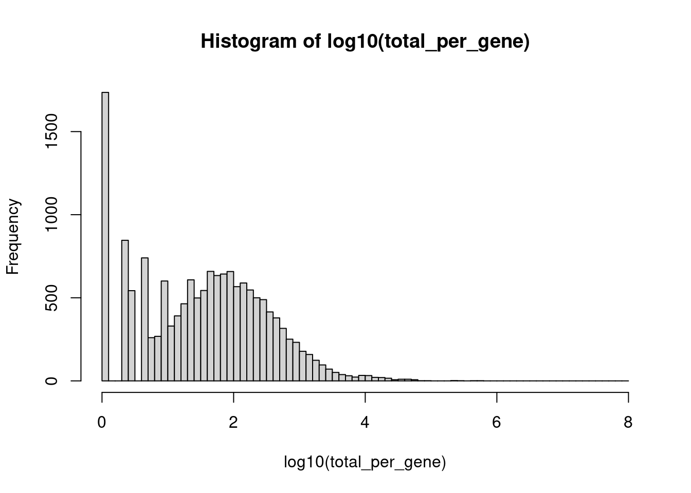
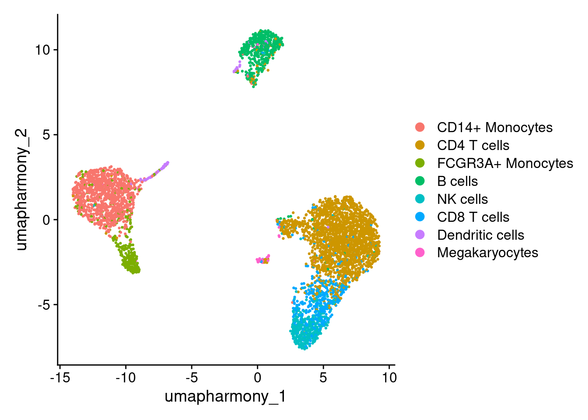
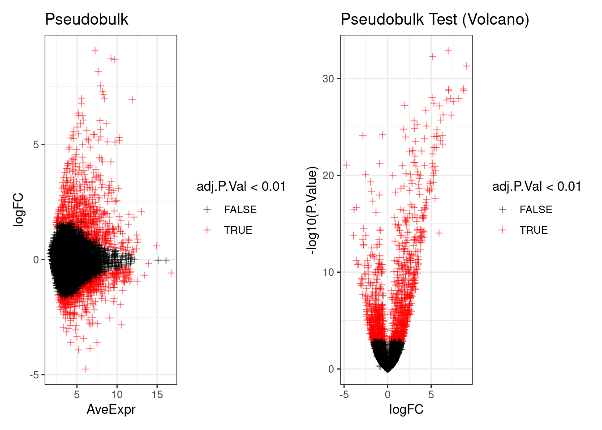
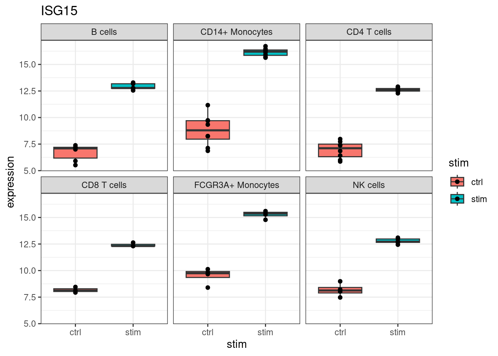
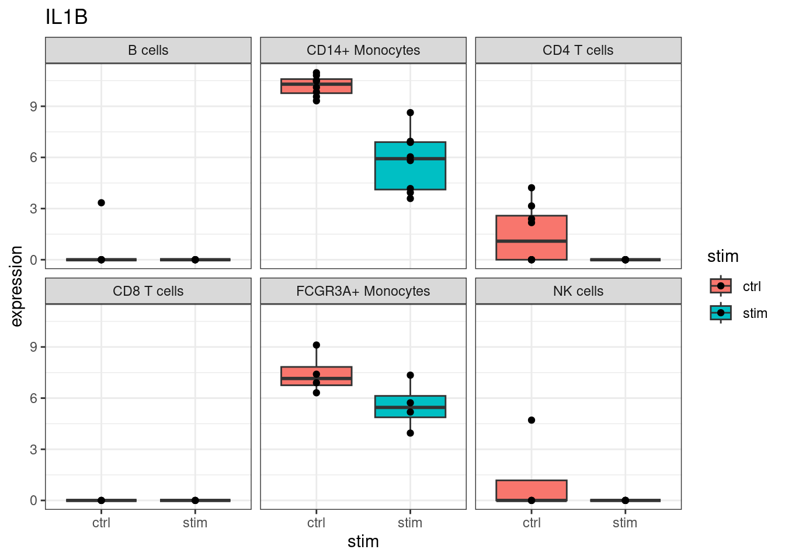

14 Differential Expression
14.1 Learning outcomes
- Explain why pseudobulk approaches treat each cell identity and condition as the unit of analysis, rather than each cell
- Interpret differential expression (DE) results to identify genes that change in response to a condition
- Assess whether DE results are cell-type specific or broadly shared across the dataset
14.2 Overview
Why do we need to do this?
Differential expression (DE) analysis is the payoff for all the preprocessing steps: clustering, integration, and annotation have prepared us to ask a specific biological question. Here, we want to know which genes change in response to IFN-beta stimulation, and whether those changes are specific to particular cell types or broadly shared.
There are many methods for DE analysis in scRNA-seq. We will use a pseudobulk approach, which is currently considered best practice when biological replicates are available.
We will be using a pseudobulk approach with limma. There is also a good discussion of using pseudobulk approaches here, which is worth checking out if you’re planning differential expression analyses.
14.3 Experimental question and annotation
In this (NB: modified!) experimental data taken from Kang et al 2018 - Multiplexed droplet single-cell RNA-sequencing using natural genetic variation, there are IFN-beta stimulated and unstimulated control PBMCs from 8 different lupus patient samples.
For this example, we’d like to look at the gene expression changes that occur with IFN-beta stimulation in the CD14+ Monocytes. IFN-beta is a type I interferon is a key mediator of the innate antiviral immune response. In monocytes, IFN-beta signalling is expected to strongly upregulate interferon-stimulated genes (ISGs) such as IFIT1, MX1, OAS1, and ISG15, as documented in the original Kang et al. 2018 paper and the broader interferon signalling literature. We will test whether our DE results recover these known targets.
To recap the annotation in our object
- ind identifies a cell as coming from one of 8 individuals.
- stim identifies a cell as control or stimulated with IFN-beta.
- cell contains the cell types identified by the creators of this data set.
So - How many cells from each condition do we have?
table(seurat_object$stim)
#>
#> ctrl stim
#> 2378 2499How many cells per individuals per group?
table(seurat_object$ind, seurat_object$stim)
#>
#> ctrl stim
#> 101 175 226
#> 107 115 106
#> 1015 503 489
#> 1016 335 348
#> 1039 87 100
#> 1244 373 311
#> 1256 384 385
#> 1488 406 534And for each sample, how many of each cell type has been classified?
table(paste(seurat_object$ind,seurat_object$stim), seurat_object$cell)
#>
#> B cells CD14+ Monocytes CD4 T cells CD8 T cells
#> 101 ctrl 23 47 60 15
#> 101 stim 30 52 83 17
#> 1015 ctrl 79 149 142 44
#> 1015 stim 68 149 148 21
#> 1016 ctrl 21 71 82 107
#> 1016 stim 29 65 65 109
#> 1039 ctrl 7 32 36 6
#> 1039 stim 6 26 48 5
#> 107 ctrl 9 50 32 6
#> 107 stim 9 35 43 1
#> 1244 ctrl 23 85 202 8
#> 1244 stim 18 58 191 4
#> 1256 ctrl 32 80 176 26
#> 1256 stim 42 70 194 25
#> 1488 ctrl 36 59 246 13
#> 1488 stim 59 59 319 15
#>
#> Dendritic cells FCGR3A+ Monocytes
#> 101 ctrl 4 11
#> 101 stim 6 23
#> 1015 ctrl 3 49
#> 1015 stim 17 43
#> 1016 ctrl 4 21
#> 1016 stim 2 32
#> 1039 ctrl 1 3
#> 1039 stim 1 6
#> 107 ctrl 3 12
#> 107 stim 2 5
#> 1244 ctrl 8 19
#> 1244 stim 6 4
#> 1256 ctrl 6 20
#> 1256 stim 3 11
#> 1488 ctrl 8 25
#> 1488 stim 12 28
#>
#> Megakaryocytes NK cells
#> 101 ctrl 4 11
#> 101 stim 1 14
#> 1015 ctrl 5 32
#> 1015 stim 5 38
#> 1016 ctrl 3 26
#> 1016 stim 1 45
#> 1039 ctrl 1 1
#> 1039 stim 3 5
#> 107 ctrl 0 3
#> 107 stim 0 11
#> 1244 ctrl 3 25
#> 1244 stim 4 26
#> 1256 ctrl 1 43
#> 1256 stim 7 33
#> 1488 ctrl 4 15
#> 1488 stim 6 36The pseudobulk step requires a unique identifier for each biological sample and for each cell type within each sample. We create these now so we can use them as grouping factors when aggregating counts.
14.4 Pre-filtering minimally expressed genes
Why do we need to do this?
In scRNA-seq data, the majority of genes have zero or near-zero counts in most cells. This is just a combination of genuine biological absence and technical dropout. Genes with very low total counts across the dataset cannot be reliably detected and will not produce meaningful DE results regardless of the statistical method used.
Removing them has three benefits:
- Noisy data is removed, and biological signals are amplified
- Computation is sped up
- The number of multiple hypotheses being tested simultaneously is reduced, which makes multiple testing correction less stringent and increases power to detect real effects.
How many genes before filtering?
seurat_object
#> An object of class Seurat
#> 35635 features across 4877 samples within 1 assay
#> Active assay: RNA (35635 features, 2000 variable features)
#> 3 layers present: counts, data, scale.data
#> 4 dimensional reductions calculated: pca, umap, harmony, umap_harmonyHow many copies of each gene are there?
total_per_gene <- rowSums(GetAssayData(seurat_object, assay='RNA', layer='counts'))
hist(log10(total_per_gene), breaks = seq(0, 8, by = 0.1))
Lets keep only those genes with at least 50 copies across the entire experiment.
The threshold is somewhat flexible. The histogram x axis is log10(total counts), so the cut-off of 50 sits at log10(50) ≈ 1.7. Look for the point where the sparse left tail separates from the main distribution of expressed genes and choose a threshold in that gap. For a dataset of this size (~3,000 cells, 16 samples), 50 counts is a reasonable minimum: it ensures a gene is detected at an average of roughly 3 counts per sample, which is the lower bound for reliable DE testing. Anywhere from 10 to 100 (log10 ≈ 1.0–2.0) is defensible, but let the histogram guide you toward a natural break.
seurat_object <- seurat_object[total_per_gene >= 50, ] How many genes after filtering?
seurat_object
#> An object of class Seurat
#> 7200 features across 4877 samples within 1 assay
#> Active assay: RNA (7200 features, 1236 variable features)
#> 3 layers present: counts, data, scale.data
#> 4 dimensional reductions calculated: pca, umap, harmony, umap_harmonyWe might like to see the effect of IFN-beta stimulation on each cell type individually. For the purposes of this workshop, just going to test one cell type; CD14+ Monocytes
An easy way is to subset the object.
# Set idents to 'cell' column.
Idents(seurat_object) <- seurat_object$cell
DimPlot(seurat_object, reduction = "umap_harmony")
seurat_object_celltype <- seurat_object[, seurat_object$cell == "CD14+ Monocytes" ]
DimPlot(seurat_object_celltype, reduction = "umap_harmony")
14.5 Pseudobulking
A naive approach to DE in scRNA-seq would be to treat each cell as an independent replicate and compare thousands of stimulated cells against thousands of control cells. This is pseudoreplication: cells from the same individual share correlated gene expression patterns and are not independent observations.
Treating them as if they are inflates the effective sample size turning 8 biological replicates into thousands, and lead to many false positives.
Pseudobulk analysis addresses this by first aggregating (summing) counts for all cells of the same cell type from the same individual into a single “pseudo-sample”. We then test for DE between these pseudo-samples — so our true unit of analysis is the individual (n = 8), not the cell. This is essentially treating the experiment as bulk RNA-seq after aggregation, which is well-validated statistically.
First, you need to build a pseudobulk matrix - the AggregateExpression() function can do this, once you set the ‘Idents’ of your seurat object to your grouping factor (here, that’s that combination of individual+treatment called ‘sample’, instead of the ‘stim’ treatment column).
# Pull out a table of our sample information - the sample, individual, stim condition and celltype
pseudobulk_annotation_table <- FetchData(seurat_object_celltype, vars = c('sample_name', 'ind', 'stim', 'cell', 'sample_celltype_name')) |>
as_tibble() |>
group_by(across(everything())) |> # group by unique row combinations
summarise(n_cells=n()) # and count the number of cells
#> `summarise()` has grouped output by 'sample_name', 'ind',
#> 'stim', 'cell'. You can override using the `.groups`
#> argument.
pseudobulk_annotation_table
#> # A tibble: 16 × 6
#> # Groups: sample_name, ind, stim, cell [16]
#> sample_name ind stim cell sample_celltype_name
#> <chr> <int> <chr> <chr> <chr>
#> 1 ctrl.101 101 ctrl CD14+ Monoc… CD14+Monocytes.101.…
#> 2 ctrl.1015 1015 ctrl CD14+ Monoc… CD14+Monocytes.1015…
#> 3 ctrl.1016 1016 ctrl CD14+ Monoc… CD14+Monocytes.1016…
#> 4 ctrl.1039 1039 ctrl CD14+ Monoc… CD14+Monocytes.1039…
#> 5 ctrl.107 107 ctrl CD14+ Monoc… CD14+Monocytes.107.…
#> 6 ctrl.1244 1244 ctrl CD14+ Monoc… CD14+Monocytes.1244…
#> 7 ctrl.1256 1256 ctrl CD14+ Monoc… CD14+Monocytes.1256…
#> 8 ctrl.1488 1488 ctrl CD14+ Monoc… CD14+Monocytes.1488…
#> 9 stim.101 101 stim CD14+ Monoc… CD14+Monocytes.101.…
#> 10 stim.1015 1015 stim CD14+ Monoc… CD14+Monocytes.1015…
#> 11 stim.1016 1016 stim CD14+ Monoc… CD14+Monocytes.1016…
#> 12 stim.1039 1039 stim CD14+ Monoc… CD14+Monocytes.1039…
#> 13 stim.107 107 stim CD14+ Monoc… CD14+Monocytes.107.…
#> 14 stim.1244 1244 stim CD14+ Monoc… CD14+Monocytes.1244…
#> 15 stim.1256 1256 stim CD14+ Monoc… CD14+Monocytes.1256…
#> 16 stim.1488 1488 stim CD14+ Monoc… CD14+Monocytes.1488…
#> # ℹ 1 more variable: n_cells <int>
# Change idents to our samples for grouping.
Idents(seurat_object_celltype) <- seurat_object_celltype$sample_name
head(seurat_object_celltype@active.ident)
#> AGGGCGCTATTTCC-1 GAGCATACTCGCCT-1 TGCCCAACAGGTTC-1
#> stim.1256 ctrl.1015 ctrl.1016
#> GGTCAAACGTAAGA-1 GGAGTTTGAAGATG-1 AGTAATTGTGTCAG-1
#> stim.1015 ctrl.1256 stim.1488
#> 16 Levels: stim.1256 ctrl.1015 ctrl.1016 ... ctrl.1039
# Then pool together counts in those groups
# AggregateExperssion returns a list of matrices - one for each assay requested (even just requesting one)
pseudobulk_matrix_list <- AggregateExpression( seurat_object_celltype, slot = 'counts', assays='RNA' )
pseudobulk_matrix <- pseudobulk_matrix_list[['RNA']]
pseudobulk_matrix[1:5,1:4]
#> 5 x 4 sparse Matrix of class "dgCMatrix"
#> stim.1256 ctrl.1015 ctrl.1016 stim.1015
#> NOC2L 1 7 . 4
#> HES4 89 3 2 161
#> ISG15 8277 185 234 19459
#> TNFRSF18 . 3 4 1
#> TNFRSF4 2 2 . .
# Match the order of the matrix with the annotation. It did already match in this case, but a mismatch would cause silent swapping of the data!
pseudobulk_matrix <- pseudobulk_matrix[,pseudobulk_annotation_table$sample_name]
# And double check our annotation matches our data
# Ie. check that all pseudobulk matrix column labels match in the same order of the 'sample_name' column of the annotation table.
stopifnot( all(colnames(pseudobulk_matrix) == pseudobulk_annotation_table$sample_name ))
pseudobulk_matrix[1:10, 1:10]
#> 10 x 10 sparse Matrix of class "dgCMatrix"
#> [[ suppressing 10 column names 'ctrl.101', 'ctrl.1015', 'ctrl.1016' ... ]]
#>
#> NOC2L 2 7 . . 3 3 3 1 1 4
#> HES4 . 3 2 1 . . . 1 32 161
#> ISG15 31 185 234 41 26 20 125 10 5239 19459
#> TNFRSF18 . 3 4 2 . . 3 4 1 1
#> TNFRSF4 . 2 . . . 1 . 2 2 .
#> SDF4 10 11 4 4 5 15 19 6 2 10
#> UBE2J2 6 33 8 5 5 11 11 3 1 11
#> PUSL1 1 6 2 4 2 4 1 4 . 1
#> CPSF3L 1 7 4 1 2 3 4 2 1 4
#> GLTPD1 2 4 2 1 1 1 2 4 1 1Now it looks like a bulk RNAseq experiment, so we will treat it like one.
14.6 Testing differential expression
We can use the popular limma package for differential expression. Here is one tutorial, and the hefty reference manual is hosted by bioconductor.
The code below fits a linear model for this experiment using the voom-limma pipeline:
Why these steps?
-
DGEList+calcNormFactors- normalises for differences in library size between samples using TMM scaling factors. -
voom- converts counts to log-CPM and computes precision weights that account for the mean-variance relationship in count data, making the data suitable for a linear model. -
model.matrix(~0 + stim + ind)- constructs a design matrix modelling expression as a function of stimulation condition and individual. Includingindaccounts for the paired structure: the same 8 individuals appear in both conditions, so inter-individual variation is absorbed as a blocking factor rather than inflating the error term. -
makeContrasts+eBayes- tests the stimulated vs. control contrast and applies empirical Bayes shrinkage to stabilise variance estimates, which improves power in small sample sizes.
library(limma)
#>
#> Attaching package: 'limma'
#> The following object is masked from 'package:BiocGenerics':
#>
#> plotMA
library(edgeR)
#>
#> Attaching package: 'edgeR'
#> The following objects are masked from 'package:SingleCellExperiment':
#>
#> cpm, tpm
dge <- DGEList(pseudobulk_matrix)
dge <- calcNormFactors(dge)
# Extract the individuals (as text, do not want them treated numerically!) and stim condition from our pseudobulk annotation table
ind <- as.character(pseudobulk_annotation_table$ind)
stim <- pseudobulk_annotation_table$stim
design <- model.matrix( ~0 + stim + ind)
vm <- voom(dge, design = design, plot = FALSE)
fit <- lmFit(vm, design = design)
contrasts <- makeContrasts(stimstim - stimctrl, levels=coef(fit))
fit <- contrasts.fit(fit, contrasts)
fit <- eBayes(fit)
de_result <- topTable(fit, n = Inf, adjust.method = "BH")
de_result <- arrange(de_result , adj.P.Val)Look at the significantly differentially expressed genes, sorted by ascending p-value (most significant first):
# Top upregulated (lowest adj.P.Val, positive logFC)
de_result %>% filter(adj.P.Val < 0.05, logFC > 0) %>% head(n=10)
#> logFC AveExpr t P.Value
#> ISG15 6.944879 11.897783 37.00164 1.354662e-33
#> ISG20 5.161162 10.313033 35.78255 5.276327e-33
#> CXCL11 9.065267 7.263356 33.83147 5.103045e-32
#> CXCL10 8.689519 9.715253 29.55139 1.171604e-29
#> IFIT3 6.981686 8.423467 29.49987 1.256224e-29
#> CCL8 8.744353 9.245621 29.29647 1.656181e-29
#> HERC5 7.004096 5.604886 29.24942 1.765963e-29
#> IFITM3 5.098910 9.743298 28.06676 9.149082e-29
#> TNFSF10 7.177164 8.286073 27.92407 1.120474e-28
#> IFIT2 8.156989 7.644975 27.90072 1.158357e-28
#> adj.P.Val B
#> ISG15 9.753564e-30 66.64279
#> ISG20 1.899478e-29 65.25865
#> CXCL11 1.224731e-28 61.78632
#> CXCL10 1.808962e-26 57.25662
#> IFIT3 1.808962e-26 57.00793
#> CCL8 1.816419e-26 56.69185
#> HERC5 1.816419e-26 56.27108
#> IFITM3 8.234174e-26 55.54448
#> TNFSF10 8.340172e-26 54.86415
#> IFIT2 8.340172e-26 54.54047
# Top downregulated (lowest adj.P.Val, negative logFC)
de_result %>% filter(adj.P.Val < 0.05, logFC < 0) %>% arrange(logFC) %>% head(n=10)
#> logFC AveExpr t P.Value
#> CLEC5A -4.750620 6.100960 -18.532938 8.739696e-22
#> C19orf59 -3.923117 5.185732 -11.464663 1.717664e-14
#> VCAN -3.856964 6.634966 -13.802822 3.577860e-17
#> MMP9 -3.597073 4.227173 -9.430137 6.523477e-12
#> IL1B -3.590668 7.499218 -14.031781 2.025812e-17
#> OSM -3.429108 5.821428 -9.151097 1.534703e-11
#> LTA4H -3.343949 4.985252 -9.168582 1.454196e-11
#> TPST1 -3.142036 3.682942 -7.703317 1.495721e-09
#> CYP27A1 -3.050862 4.802830 -7.600485 2.086998e-09
#> KCNJ15 -3.001987 3.886922 -8.085342 4.374652e-10
#> adj.P.Val B
#> CLEC5A 1.258516e-19 39.36249
#> C19orf59 8.529090e-13 22.88877
#> VCAN 2.602080e-15 28.99152
#> MMP9 2.194904e-10 17.06411
#> IL1B 1.568371e-15 29.53176
#> OSM 4.825268e-10 16.22204
#> LTA4H 4.592198e-10 16.28003
#> TPST1 3.344710e-08 11.76485
#> CYP27A1 4.526019e-08 11.43133
#> KCNJ15 1.075000e-08 12.95675Key columns to interpret:
-
logFC- log2 fold change between stimulated and control. Positive values mean higher expression in stimulated cells. -
AveExpr- average log2 expression across all samples. Higher values mean the gene is more abundantly expressed overall. -
adj.P.Val- p-value adjusted for multiple testing (Benjamini-Hochberg FDR). Use< 0.05as a threshold for significance; the plots below use< 0.01for a stricter cutoff to minimise false positive results -
B- log-odds that the gene is differentially expressed; larger values indicate stronger evidence.
Answer in Slack
Look at the top upregulated genes in de_result. Which match the known IFN-beta targets from the overview (IFIT1, MX1, OAS1, ISG15)? Now sort by logFC ascending — which genes are most strongly downregulated by IFN-beta in monocytes? You may not recognise them yet; we will return to them below.
Two plots show DE results:
- MA plot (left): average expression vs fold change. Significant genes (red) should spread across the full expression range, not cluster at low counts.
- Volcano plot (right): fold change vs statistical confidence. Top-right = significantly upregulated; top-left = significantly downregulated. Height = confidence, position = effect size.
p1 <- ggplot(de_result, aes(x=AveExpr, y=logFC, col=adj.P.Val < 0.01)) +
geom_point(pch=3, alpha=0.5) +
scale_colour_manual(values=c('TRUE'="red",'FALSE'="black")) +
theme_bw() +
ggtitle("Pseudobulk")
p2 <- ggplot(de_result, aes(x=logFC, y=-log10(P.Value), col=adj.P.Val < 0.01)) +
geom_point(pch=3, alpha=0.5) +
scale_colour_manual(values=c('TRUE'="red",'FALSE'="black")) +
theme_bw() +
ggtitle("Pseudobulk Test (Volcano)")
p1 + p2
14.7 Plot gene expression
Its always a good idea to look at the data. Lets plot the expression of a differentially expressed gene, across all celltypes.
We will build another expression matrix for this for two reasons:
- Need normalised counts: We used counts for the differential expression. But counts are unnormalised, so we need a normalised version for visually comparing samples.
- Plot all celltypes: We used just monocytes for the comparison, but we’d like to plot all the celltypes.
This code will build another counts matrix with a ‘sample’ for every combination of sample + celltype. Plus a table of annotation to go with it.
# Pull out a table of our sample information - the sample, individual, stim condition and celltype, for all celltypes
pseudobulk_annotation_table.allcelltypes <- FetchData(seurat_object, vars = c('sample_name', 'ind', 'stim', 'cell', 'sample_celltype_name')) %>% as_tibble() %>%
group_by(across()) %>%
summarise(n_cells=n())
#> Warning: There was 1 warning in `group_by()`.
#> ℹ In argument: `across()`.
#> Caused by warning:
#> ! Using `across()` without supplying `.cols` was deprecated in dplyr 1.1.0.
#> ℹ Please supply `.cols` instead.
#> `summarise()` has grouped output by 'sample_name', 'ind',
#> 'stim', 'cell'. You can override using the `.groups`
#> argument.
pseudobulk_annotation_table.allcelltypes
#> # A tibble: 126 × 6
#> # Groups: sample_name, ind, stim, cell [126]
#> sample_name ind stim cell sample_celltype_name
#> <chr> <int> <chr> <chr> <chr>
#> 1 ctrl.101 101 ctrl B cells Bcells.101.ctrl
#> 2 ctrl.101 101 ctrl CD14+ Monoc… CD14+Monocytes.101.…
#> 3 ctrl.101 101 ctrl CD4 T cells CD4Tcells.101.ctrl
#> 4 ctrl.101 101 ctrl CD8 T cells CD8Tcells.101.ctrl
#> 5 ctrl.101 101 ctrl Dendritic c… Dendriticcells.101.…
#> 6 ctrl.101 101 ctrl FCGR3A+ Mon… FCGR3A+Monocytes.10…
#> 7 ctrl.101 101 ctrl Megakaryocy… Megakaryocytes.101.…
#> 8 ctrl.101 101 ctrl NK cells NKcells.101.ctrl
#> 9 ctrl.1015 1015 ctrl B cells Bcells.1015.ctrl
#> 10 ctrl.1015 1015 ctrl CD14+ Monoc… CD14+Monocytes.1015…
#> # ℹ 116 more rows
#> # ℹ 1 more variable: n_cells <int>Remove anything with less than 20 cells (we didn’t need to bother for the CD14+ Monocytes)
pseudobulk_annotation_table.allcelltypes <- filter(pseudobulk_annotation_table.allcelltypes, n_cells >= 20)
## And all celltype counts matrix
Idents(seurat_object) <- seurat_object$sample_celltype_name
pseudobulk_matrix_list.allcelltypes <- AggregateExpression( seurat_object, slot = 'counts', assays='RNA' )
pseudobulk_matrix.allcelltypes <- pseudobulk_matrix_list.allcelltypes[['RNA']]
# Match the order of the matrix with the annotation. It did already match in this case, but a mismatch would cause silent swapping of the data!
pseudobulk_matrix.allcelltypes <- pseudobulk_matrix.allcelltypes[,pseudobulk_annotation_table.allcelltypes$sample_celltype_name]
pseudobulk_matrix.allcelltypes[1:5,1:4]
#> 5 x 4 sparse Matrix of class "dgCMatrix"
#> Bcells.101.ctrl CD14+Monocytes.101.ctrl
#> NOC2L 4 2
#> HES4 1 .
#> ISG15 2 31
#> TNFRSF18 2 .
#> TNFRSF4 . .
#> CD4Tcells.101.ctrl Bcells.1015.ctrl
#> NOC2L 3 6
#> HES4 2 .
#> ISG15 5 16
#> TNFRSF18 2 9
#> TNFRSF4 11 6Trimmed Mean of M-values (TMM) normalisation accounts for differences in library size and composition between samples by computing scaling factors relative to a reference sample. The limma-voom model used above for DE worked directly with raw counts - but for visualising and comparing expression levels across samples we need normalised values. We compute TMM-normalised counts per million (CPM) and log2 transform them; adding 1 before logging ensures zero counts map to 0 rather than negative infinity.
dge <- DGEList(pseudobulk_matrix.allcelltypes)
dge <- calcNormFactors(dge)
norm_matrix <- edgeR::cpm(dge) # Get normalised matrix according to normalisation factors.
lognorm_matrix <- log2(norm_matrix + 1) # add 1 so that zero counts can be logged to 0.
lognorm_matrix[1:4,1:5]
#> Bcells.101.ctrl CD14+Monocytes.101.ctrl
#> NOC2L 6.505495 4.365954
#> HES4 4.552362 0.000000
#> ISG15 5.521287 8.253166
#> TNFRSF18 5.521287 0.000000
#> CD4Tcells.101.ctrl Bcells.1015.ctrl
#> NOC2L 5.275408 5.802536
#> HES4 4.708951 0.000000
#> ISG15 5.997396 7.201327
#> TNFRSF18 4.708951 6.378856
#> CD14+Monocytes.1015.ctrl
#> NOC2L 5.012057
#> HES4 3.848078
#> ISG15 9.692412
#> TNFRSF18 3.848078The DE table tells us which genes change in monocytes. It does not tell us whether those changes are unique to monocytes. A gene at the top of de_result could be a broad antiviral response that activates in every cell type, or a genuinely monocyte-specific change. We can only tell by plotting expression across all cell types.
14.7.1 Worked example 1: a globally upregulated gene
Start with ISG15, one of the top DE genes and a canonical interferon-stimulated gene:
# Attach expression values to the per-sample annotation by matching on sample_celltype_name
my_gene <- 'ISG15'
pseudobulk_annotation_table.allcelltypes$expression <- lognorm_matrix[my_gene, pseudobulk_annotation_table.allcelltypes$sample_celltype_name]
ggplot(pseudobulk_annotation_table.allcelltypes, aes(x=stim, y=expression, fill=stim)) +
geom_boxplot(outlier.shape=NA) +
geom_point() +
theme_bw() +
facet_wrap(~cell) +
ggtitle(my_gene)
ISG15 increases in every cell type. This is the broad antiviral response: type I interferon receptors are expressed on most immune cells, so the core ISG program activates broadly. Many of the top hits in de_result follow this pattern.
14.7.2 Worked example 2: a monocyte-specific change
Not every IFN-beta response is global. IL1B is a classical inflammatory cytokine, highly expressed by activated monocytes. Watch what happens to it under IFN-beta:
my_gene <- 'IL1B'
pseudobulk_annotation_table.allcelltypes$expression <- lognorm_matrix[my_gene, pseudobulk_annotation_table.allcelltypes$sample_celltype_name]
ggplot(pseudobulk_annotation_table.allcelltypes, aes(x=stim, y=expression, fill=stim)) +
geom_boxplot(outlier.shape=NA) +
geom_point() +
theme_bw() +
facet_wrap(~cell) +
ggtitle(my_gene)
IL1B drops sharply in monocytes and barely moves elsewhere. The other cell types have low baseline expression (IL1B is a monocyte/myeloid gene), so the suppression is monocyte-specific. Biologically, IFN-beta redirects monocytes away from classical inflammatory output (IL1B, OSM, CLEC5A) and toward antiviral functions (the ISG program, plus monocyte-specific antiviral chemokines like CXCL11, CCL8, IDO1).
The interactive plot below cycles through a curated set of genes covering all three patterns (global, monocyte-up, monocyte-down). Use the play button to cycle through them, or click a step directly to jump to a gene.
library(plotly)
gene_list <- c(
# Global ISGs - the cell-type-agnostic antiviral response. Every cell type upregulates these
"ISG15", "MX1", "IFIT1",
# Monocyte-specific upregulation - antiviral chemokines and effectors restricted to myeloid cells
"IL27", "IRG1",
# Monocyte-specific downregulation - classical inflammatory output suppressed by IFN-beta
"IL1B", "OSM",
# B-cell-specific upregulation
"INPP1"
)
gene_list <- gene_list[gene_list %in% rownames(lognorm_matrix)]
df_long <- bind_rows(lapply(gene_list, function(g) {
df <- pseudobulk_annotation_table.allcelltypes
df$expression <- lognorm_matrix[g, df$sample_celltype_name]
df$gene <- g
df
}))
p <- ggplot(df_long,
aes(x = stim,
y = expression,
fill = stim,
frame = gene,
text = paste0("Ind: ", ind,
"\nExpr: ", round(expression, 2)))) +
geom_boxplot(outlier.shape = NA, width = 0.5) +
geom_point(size = 1.5, alpha = 0.7,
position = position_jitter(width = 0.05, seed = 1)) +
scale_fill_manual(values = c(ctrl = "#4E79A7", stim = "#E15759"),
labels = c(ctrl = "Control", stim = "Stimulated")) +
facet_wrap(~cell, scales = "free_y") +
labs(y = "log2 CPM", x = NULL, fill = "Condition") +
theme_bw(base_size = 11) +
theme(strip.background = element_rect(fill = "#f5f5f5", colour = "#ddd"),
strip.text = element_text(face = "bold", size = 9),
panel.grid.minor = element_blank())
ggplotly(p, tooltip = "text")
#> Warning: 'box' objects don't have these attributes: 'mode'
#> Valid attributes include:
#> 'alignmentgroup', 'boxmean', 'boxpoints', 'customdata', 'customdatasrc', 'dx', 'dy', 'fillcolor', 'hoverinfo', 'hoverinfosrc', 'hoverlabel', 'hoveron', 'hovertemplate', 'hovertemplatesrc', 'hovertext', 'hovertextsrc', 'ids', 'idssrc', 'jitter', 'legendgroup', 'legendgrouptitle', 'legendrank', 'line', 'lowerfence', 'lowerfencesrc', 'marker', 'mean', 'meansrc', 'median', 'mediansrc', 'meta', 'metasrc', 'name', 'notched', 'notchspan', 'notchspansrc', 'notchwidth', 'offsetgroup', 'opacity', 'orientation', 'pointpos', 'q1', 'q1src', 'q3', 'q3src', 'quartilemethod', 'sd', 'sdsrc', 'selected', 'selectedpoints', 'showlegend', 'stream', 'text', 'textsrc', 'transforms', 'type', 'uid', 'uirevision', 'unselected', 'upperfence', 'upperfencesrc', 'visible', 'whiskerwidth', 'width', 'x', 'x0', 'xaxis', 'xcalendar', 'xhoverformat', 'xperiod', 'xperiod0', 'xperiodalignment', 'xsrc', 'y', 'y0', 'yaxis', 'ycalendar', 'yhoverformat', 'yperiod', 'yperiod0', 'yperiodalignment', 'ysrc', 'key', 'set', 'frame', 'transforms', '_isNestedKey', '_isSimpleKey', '_isGraticule', '_bbox'
#> Warning: 'box' objects don't have these attributes: 'mode'
#> Valid attributes include:
#> 'alignmentgroup', 'boxmean', 'boxpoints', 'customdata', 'customdatasrc', 'dx', 'dy', 'fillcolor', 'hoverinfo', 'hoverinfosrc', 'hoverlabel', 'hoveron', 'hovertemplate', 'hovertemplatesrc', 'hovertext', 'hovertextsrc', 'ids', 'idssrc', 'jitter', 'legendgroup', 'legendgrouptitle', 'legendrank', 'line', 'lowerfence', 'lowerfencesrc', 'marker', 'mean', 'meansrc', 'median', 'mediansrc', 'meta', 'metasrc', 'name', 'notched', 'notchspan', 'notchspansrc', 'notchwidth', 'offsetgroup', 'opacity', 'orientation', 'pointpos', 'q1', 'q1src', 'q3', 'q3src', 'quartilemethod', 'sd', 'sdsrc', 'selected', 'selectedpoints', 'showlegend', 'stream', 'text', 'textsrc', 'transforms', 'type', 'uid', 'uirevision', 'unselected', 'upperfence', 'upperfencesrc', 'visible', 'whiskerwidth', 'width', 'x', 'x0', 'xaxis', 'xcalendar', 'xhoverformat', 'xperiod', 'xperiod0', 'xperiodalignment', 'xsrc', 'y', 'y0', 'yaxis', 'ycalendar', 'yhoverformat', 'yperiod', 'yperiod0', 'yperiodalignment', 'ysrc', 'key', 'set', 'frame', 'transforms', '_isNestedKey', '_isSimpleKey', '_isGraticule', '_bbox'
#> Warning: 'box' objects don't have these attributes: 'mode'
#> Valid attributes include:
#> 'alignmentgroup', 'boxmean', 'boxpoints', 'customdata', 'customdatasrc', 'dx', 'dy', 'fillcolor', 'hoverinfo', 'hoverinfosrc', 'hoverlabel', 'hoveron', 'hovertemplate', 'hovertemplatesrc', 'hovertext', 'hovertextsrc', 'ids', 'idssrc', 'jitter', 'legendgroup', 'legendgrouptitle', 'legendrank', 'line', 'lowerfence', 'lowerfencesrc', 'marker', 'mean', 'meansrc', 'median', 'mediansrc', 'meta', 'metasrc', 'name', 'notched', 'notchspan', 'notchspansrc', 'notchwidth', 'offsetgroup', 'opacity', 'orientation', 'pointpos', 'q1', 'q1src', 'q3', 'q3src', 'quartilemethod', 'sd', 'sdsrc', 'selected', 'selectedpoints', 'showlegend', 'stream', 'text', 'textsrc', 'transforms', 'type', 'uid', 'uirevision', 'unselected', 'upperfence', 'upperfencesrc', 'visible', 'whiskerwidth', 'width', 'x', 'x0', 'xaxis', 'xcalendar', 'xhoverformat', 'xperiod', 'xperiod0', 'xperiodalignment', 'xsrc', 'y', 'y0', 'yaxis', 'ycalendar', 'yhoverformat', 'yperiod', 'yperiod0', 'yperiodalignment', 'ysrc', 'key', 'set', 'frame', 'transforms', '_isNestedKey', '_isSimpleKey', '_isGraticule', '_bbox'
#> Warning: 'box' objects don't have these attributes: 'mode'
#> Valid attributes include:
#> 'alignmentgroup', 'boxmean', 'boxpoints', 'customdata', 'customdatasrc', 'dx', 'dy', 'fillcolor', 'hoverinfo', 'hoverinfosrc', 'hoverlabel', 'hoveron', 'hovertemplate', 'hovertemplatesrc', 'hovertext', 'hovertextsrc', 'ids', 'idssrc', 'jitter', 'legendgroup', 'legendgrouptitle', 'legendrank', 'line', 'lowerfence', 'lowerfencesrc', 'marker', 'mean', 'meansrc', 'median', 'mediansrc', 'meta', 'metasrc', 'name', 'notched', 'notchspan', 'notchspansrc', 'notchwidth', 'offsetgroup', 'opacity', 'orientation', 'pointpos', 'q1', 'q1src', 'q3', 'q3src', 'quartilemethod', 'sd', 'sdsrc', 'selected', 'selectedpoints', 'showlegend', 'stream', 'text', 'textsrc', 'transforms', 'type', 'uid', 'uirevision', 'unselected', 'upperfence', 'upperfencesrc', 'visible', 'whiskerwidth', 'width', 'x', 'x0', 'xaxis', 'xcalendar', 'xhoverformat', 'xperiod', 'xperiod0', 'xperiodalignment', 'xsrc', 'y', 'y0', 'yaxis', 'ycalendar', 'yhoverformat', 'yperiod', 'yperiod0', 'yperiodalignment', 'ysrc', 'key', 'set', 'frame', 'transforms', '_isNestedKey', '_isSimpleKey', '_isGraticule', '_bbox'
#> Warning: 'box' objects don't have these attributes: 'mode'
#> Valid attributes include:
#> 'alignmentgroup', 'boxmean', 'boxpoints', 'customdata', 'customdatasrc', 'dx', 'dy', 'fillcolor', 'hoverinfo', 'hoverinfosrc', 'hoverlabel', 'hoveron', 'hovertemplate', 'hovertemplatesrc', 'hovertext', 'hovertextsrc', 'ids', 'idssrc', 'jitter', 'legendgroup', 'legendgrouptitle', 'legendrank', 'line', 'lowerfence', 'lowerfencesrc', 'marker', 'mean', 'meansrc', 'median', 'mediansrc', 'meta', 'metasrc', 'name', 'notched', 'notchspan', 'notchspansrc', 'notchwidth', 'offsetgroup', 'opacity', 'orientation', 'pointpos', 'q1', 'q1src', 'q3', 'q3src', 'quartilemethod', 'sd', 'sdsrc', 'selected', 'selectedpoints', 'showlegend', 'stream', 'text', 'textsrc', 'transforms', 'type', 'uid', 'uirevision', 'unselected', 'upperfence', 'upperfencesrc', 'visible', 'whiskerwidth', 'width', 'x', 'x0', 'xaxis', 'xcalendar', 'xhoverformat', 'xperiod', 'xperiod0', 'xperiodalignment', 'xsrc', 'y', 'y0', 'yaxis', 'ycalendar', 'yhoverformat', 'yperiod', 'yperiod0', 'yperiodalignment', 'ysrc', 'key', 'set', 'frame', 'transforms', '_isNestedKey', '_isSimpleKey', '_isGraticule', '_bbox'
#> Warning: 'box' objects don't have these attributes: 'mode'
#> Valid attributes include:
#> 'alignmentgroup', 'boxmean', 'boxpoints', 'customdata', 'customdatasrc', 'dx', 'dy', 'fillcolor', 'hoverinfo', 'hoverinfosrc', 'hoverlabel', 'hoveron', 'hovertemplate', 'hovertemplatesrc', 'hovertext', 'hovertextsrc', 'ids', 'idssrc', 'jitter', 'legendgroup', 'legendgrouptitle', 'legendrank', 'line', 'lowerfence', 'lowerfencesrc', 'marker', 'mean', 'meansrc', 'median', 'mediansrc', 'meta', 'metasrc', 'name', 'notched', 'notchspan', 'notchspansrc', 'notchwidth', 'offsetgroup', 'opacity', 'orientation', 'pointpos', 'q1', 'q1src', 'q3', 'q3src', 'quartilemethod', 'sd', 'sdsrc', 'selected', 'selectedpoints', 'showlegend', 'stream', 'text', 'textsrc', 'transforms', 'type', 'uid', 'uirevision', 'unselected', 'upperfence', 'upperfencesrc', 'visible', 'whiskerwidth', 'width', 'x', 'x0', 'xaxis', 'xcalendar', 'xhoverformat', 'xperiod', 'xperiod0', 'xperiodalignment', 'xsrc', 'y', 'y0', 'yaxis', 'ycalendar', 'yhoverformat', 'yperiod', 'yperiod0', 'yperiodalignment', 'ysrc', 'key', 'set', 'frame', 'transforms', '_isNestedKey', '_isSimpleKey', '_isGraticule', '_bbox'
#> Warning: 'box' objects don't have these attributes: 'mode'
#> Valid attributes include:
#> 'alignmentgroup', 'boxmean', 'boxpoints', 'customdata', 'customdatasrc', 'dx', 'dy', 'fillcolor', 'hoverinfo', 'hoverinfosrc', 'hoverlabel', 'hoveron', 'hovertemplate', 'hovertemplatesrc', 'hovertext', 'hovertextsrc', 'ids', 'idssrc', 'jitter', 'legendgroup', 'legendgrouptitle', 'legendrank', 'line', 'lowerfence', 'lowerfencesrc', 'marker', 'mean', 'meansrc', 'median', 'mediansrc', 'meta', 'metasrc', 'name', 'notched', 'notchspan', 'notchspansrc', 'notchwidth', 'offsetgroup', 'opacity', 'orientation', 'pointpos', 'q1', 'q1src', 'q3', 'q3src', 'quartilemethod', 'sd', 'sdsrc', 'selected', 'selectedpoints', 'showlegend', 'stream', 'text', 'textsrc', 'transforms', 'type', 'uid', 'uirevision', 'unselected', 'upperfence', 'upperfencesrc', 'visible', 'whiskerwidth', 'width', 'x', 'x0', 'xaxis', 'xcalendar', 'xhoverformat', 'xperiod', 'xperiod0', 'xperiodalignment', 'xsrc', 'y', 'y0', 'yaxis', 'ycalendar', 'yhoverformat', 'yperiod', 'yperiod0', 'yperiodalignment', 'ysrc', 'key', 'set', 'frame', 'transforms', '_isNestedKey', '_isSimpleKey', '_isGraticule', '_bbox'
#> Warning: 'box' objects don't have these attributes: 'mode'
#> Valid attributes include:
#> 'alignmentgroup', 'boxmean', 'boxpoints', 'customdata', 'customdatasrc', 'dx', 'dy', 'fillcolor', 'hoverinfo', 'hoverinfosrc', 'hoverlabel', 'hoveron', 'hovertemplate', 'hovertemplatesrc', 'hovertext', 'hovertextsrc', 'ids', 'idssrc', 'jitter', 'legendgroup', 'legendgrouptitle', 'legendrank', 'line', 'lowerfence', 'lowerfencesrc', 'marker', 'mean', 'meansrc', 'median', 'mediansrc', 'meta', 'metasrc', 'name', 'notched', 'notchspan', 'notchspansrc', 'notchwidth', 'offsetgroup', 'opacity', 'orientation', 'pointpos', 'q1', 'q1src', 'q3', 'q3src', 'quartilemethod', 'sd', 'sdsrc', 'selected', 'selectedpoints', 'showlegend', 'stream', 'text', 'textsrc', 'transforms', 'type', 'uid', 'uirevision', 'unselected', 'upperfence', 'upperfencesrc', 'visible', 'whiskerwidth', 'width', 'x', 'x0', 'xaxis', 'xcalendar', 'xhoverformat', 'xperiod', 'xperiod0', 'xperiodalignment', 'xsrc', 'y', 'y0', 'yaxis', 'ycalendar', 'yhoverformat', 'yperiod', 'yperiod0', 'yperiodalignment', 'ysrc', 'key', 'set', 'frame', 'transforms', '_isNestedKey', '_isSimpleKey', '_isGraticule', '_bbox'
#> Warning: 'box' objects don't have these attributes: 'mode'
#> Valid attributes include:
#> 'alignmentgroup', 'boxmean', 'boxpoints', 'customdata', 'customdatasrc', 'dx', 'dy', 'fillcolor', 'hoverinfo', 'hoverinfosrc', 'hoverlabel', 'hoveron', 'hovertemplate', 'hovertemplatesrc', 'hovertext', 'hovertextsrc', 'ids', 'idssrc', 'jitter', 'legendgroup', 'legendgrouptitle', 'legendrank', 'line', 'lowerfence', 'lowerfencesrc', 'marker', 'mean', 'meansrc', 'median', 'mediansrc', 'meta', 'metasrc', 'name', 'notched', 'notchspan', 'notchspansrc', 'notchwidth', 'offsetgroup', 'opacity', 'orientation', 'pointpos', 'q1', 'q1src', 'q3', 'q3src', 'quartilemethod', 'sd', 'sdsrc', 'selected', 'selectedpoints', 'showlegend', 'stream', 'text', 'textsrc', 'transforms', 'type', 'uid', 'uirevision', 'unselected', 'upperfence', 'upperfencesrc', 'visible', 'whiskerwidth', 'width', 'x', 'x0', 'xaxis', 'xcalendar', 'xhoverformat', 'xperiod', 'xperiod0', 'xperiodalignment', 'xsrc', 'y', 'y0', 'yaxis', 'ycalendar', 'yhoverformat', 'yperiod', 'yperiod0', 'yperiodalignment', 'ysrc', 'key', 'set', 'frame', 'transforms', '_isNestedKey', '_isSimpleKey', '_isGraticule', '_bbox'
#> Warning: 'box' objects don't have these attributes: 'mode'
#> Valid attributes include:
#> 'alignmentgroup', 'boxmean', 'boxpoints', 'customdata', 'customdatasrc', 'dx', 'dy', 'fillcolor', 'hoverinfo', 'hoverinfosrc', 'hoverlabel', 'hoveron', 'hovertemplate', 'hovertemplatesrc', 'hovertext', 'hovertextsrc', 'ids', 'idssrc', 'jitter', 'legendgroup', 'legendgrouptitle', 'legendrank', 'line', 'lowerfence', 'lowerfencesrc', 'marker', 'mean', 'meansrc', 'median', 'mediansrc', 'meta', 'metasrc', 'name', 'notched', 'notchspan', 'notchspansrc', 'notchwidth', 'offsetgroup', 'opacity', 'orientation', 'pointpos', 'q1', 'q1src', 'q3', 'q3src', 'quartilemethod', 'sd', 'sdsrc', 'selected', 'selectedpoints', 'showlegend', 'stream', 'text', 'textsrc', 'transforms', 'type', 'uid', 'uirevision', 'unselected', 'upperfence', 'upperfencesrc', 'visible', 'whiskerwidth', 'width', 'x', 'x0', 'xaxis', 'xcalendar', 'xhoverformat', 'xperiod', 'xperiod0', 'xperiodalignment', 'xsrc', 'y', 'y0', 'yaxis', 'ycalendar', 'yhoverformat', 'yperiod', 'yperiod0', 'yperiodalignment', 'ysrc', 'key', 'set', 'frame', 'transforms', '_isNestedKey', '_isSimpleKey', '_isGraticule', '_bbox'
#> Warning: 'box' objects don't have these attributes: 'mode'
#> Valid attributes include:
#> 'alignmentgroup', 'boxmean', 'boxpoints', 'customdata', 'customdatasrc', 'dx', 'dy', 'fillcolor', 'hoverinfo', 'hoverinfosrc', 'hoverlabel', 'hoveron', 'hovertemplate', 'hovertemplatesrc', 'hovertext', 'hovertextsrc', 'ids', 'idssrc', 'jitter', 'legendgroup', 'legendgrouptitle', 'legendrank', 'line', 'lowerfence', 'lowerfencesrc', 'marker', 'mean', 'meansrc', 'median', 'mediansrc', 'meta', 'metasrc', 'name', 'notched', 'notchspan', 'notchspansrc', 'notchwidth', 'offsetgroup', 'opacity', 'orientation', 'pointpos', 'q1', 'q1src', 'q3', 'q3src', 'quartilemethod', 'sd', 'sdsrc', 'selected', 'selectedpoints', 'showlegend', 'stream', 'text', 'textsrc', 'transforms', 'type', 'uid', 'uirevision', 'unselected', 'upperfence', 'upperfencesrc', 'visible', 'whiskerwidth', 'width', 'x', 'x0', 'xaxis', 'xcalendar', 'xhoverformat', 'xperiod', 'xperiod0', 'xperiodalignment', 'xsrc', 'y', 'y0', 'yaxis', 'ycalendar', 'yhoverformat', 'yperiod', 'yperiod0', 'yperiodalignment', 'ysrc', 'key', 'set', 'frame', 'transforms', '_isNestedKey', '_isSimpleKey', '_isGraticule', '_bbox'
#> Warning: 'box' objects don't have these attributes: 'mode'
#> Valid attributes include:
#> 'alignmentgroup', 'boxmean', 'boxpoints', 'customdata', 'customdatasrc', 'dx', 'dy', 'fillcolor', 'hoverinfo', 'hoverinfosrc', 'hoverlabel', 'hoveron', 'hovertemplate', 'hovertemplatesrc', 'hovertext', 'hovertextsrc', 'ids', 'idssrc', 'jitter', 'legendgroup', 'legendgrouptitle', 'legendrank', 'line', 'lowerfence', 'lowerfencesrc', 'marker', 'mean', 'meansrc', 'median', 'mediansrc', 'meta', 'metasrc', 'name', 'notched', 'notchspan', 'notchspansrc', 'notchwidth', 'offsetgroup', 'opacity', 'orientation', 'pointpos', 'q1', 'q1src', 'q3', 'q3src', 'quartilemethod', 'sd', 'sdsrc', 'selected', 'selectedpoints', 'showlegend', 'stream', 'text', 'textsrc', 'transforms', 'type', 'uid', 'uirevision', 'unselected', 'upperfence', 'upperfencesrc', 'visible', 'whiskerwidth', 'width', 'x', 'x0', 'xaxis', 'xcalendar', 'xhoverformat', 'xperiod', 'xperiod0', 'xperiodalignment', 'xsrc', 'y', 'y0', 'yaxis', 'ycalendar', 'yhoverformat', 'yperiod', 'yperiod0', 'yperiodalignment', 'ysrc', 'key', 'set', 'frame', 'transforms', '_isNestedKey', '_isSimpleKey', '_isGraticule', '_bbox'Discuss
Cycle through the interactive plot and identify whether genes fit into three groups:
- global - changes in every cell type
- monocyte-specific upregulated
- monocyte-specific downregulated
What story does this tell about how IFN-beta affects monocyte function compared to its effects on other immune cells? Does this support or refine the initial hypothesis about a monocyte-specific IFN-beta response?
What about FindMarkers?
If you look at the Seurat differential expression vignette, you might have seen code that uses FindMarkers() to look for differential expression between groups.
By default, that function uses a Wilcoxon test treating each individual cell as a replicate. In cases where biological replicates are simply not available this can be useful (e.g. pilot study, old public dataset, or rare sample). However, when biological replicates are available, they should be used. See the pseudoreplication discussion above.
FindAllMarkers() extends this by automating the comparison across every cluster or cell identity in one call, rather than running FindMarkers() separately for each. This is convenient for quickly generating a DE gene list per cluster, but carries the same caveat: it still treats cells as replicates. For a dataset with biological replicates, the pseudobulk approach used in this chapter should be preferred, and can similarly be looped across all cell types if a dataset-wide comparison is needed.